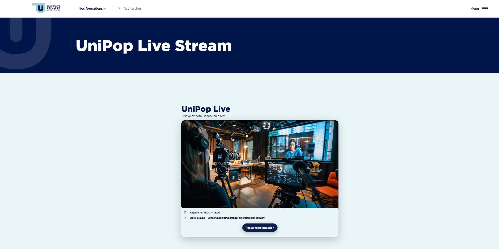

UniPop Live
An embedded live-event experience for the UniPop website, combining automatically playing livestreams with direct audience interaction and real-time questions.
Overview
UniPop Live was developed to bring live events directly into the UniPop website without forcing visitors to leave the platform or navigate between several external services.
The embedded page combines livestream playback and audience participation in a single interface. Visitors can watch the live production directly on the UniPop website and submit questions to the studio or to the location where the event is taking place.
The result is a more interactive live-event experience in which online viewers can participate rather than simply watch.
Project details
The goal was to create a dedicated live-event page that could be integrated into the existing UniPop WordPress website while remaining technically independent from the WordPress system itself.
The live interface is therefore built as a separate web page and embedded into the UniPop website through an iframe. This approach makes it possible to develop and update the live experience independently without modifying the main WordPress theme or page structure.
During an event, the configured livestream can start directly inside the page. The viewer remains on the UniPop website while the video content is presented as part of the page experience.
Audience interaction is handled through Pubble. Viewers can submit questions from the same live page, allowing the team in the studio or at the event location to receive and respond to questions coming from the online audience.
Embedded livestream
Live video is integrated directly into the UniPop website, allowing visitors to follow an event without leaving the page.
Automatic playback
The page is designed so that the configured livestream can begin automatically when the live experience is opened.
WordPress integration
The complete live interface is embedded into the UniPop WordPress site through an iframe.
Independent web application
The live page can be developed and updated separately from the main UniPop website.
Audience questions
Online viewers can send questions directly to the studio or event location while following the livestream.
Pubble integration
Pubble provides the interactive question-and-answer channel between the online audience and the live event team.
Technology
UniPop Live is built as a responsive web interface using HTML, CSS and JavaScript. The application is designed to run as an independent page that can then be embedded inside the existing UniPop WordPress environment.
The iframe-based architecture separates the live-event experience from the main website. This provides more freedom for livestream integration, responsive layout and event-specific functionality without requiring changes to the WordPress theme.
External livestream sources can be integrated directly into the page, while Pubble provides the audience interaction layer for submitting and handling questions during the event.